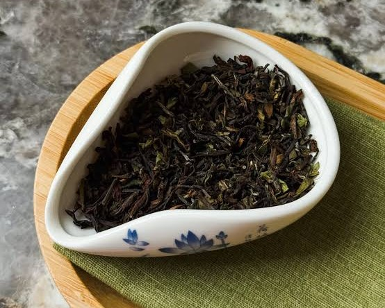
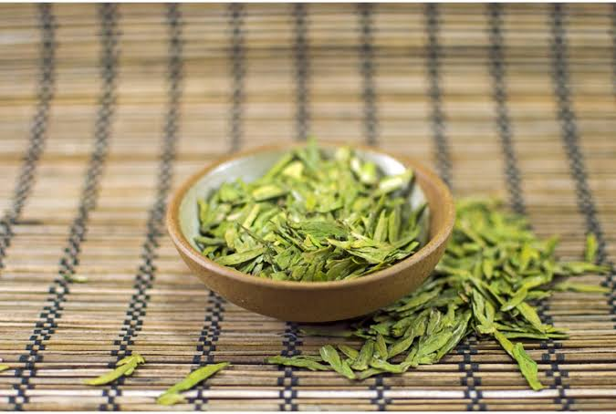
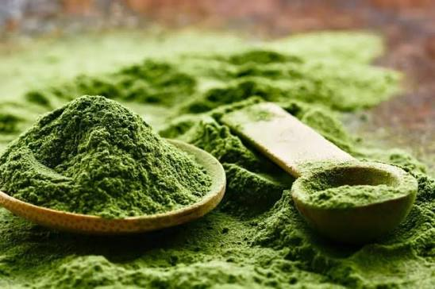
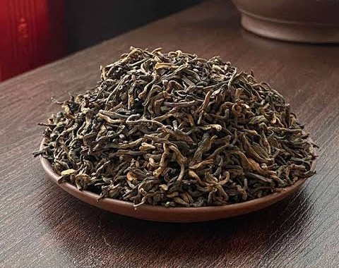
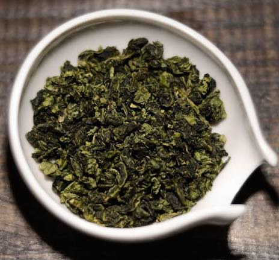
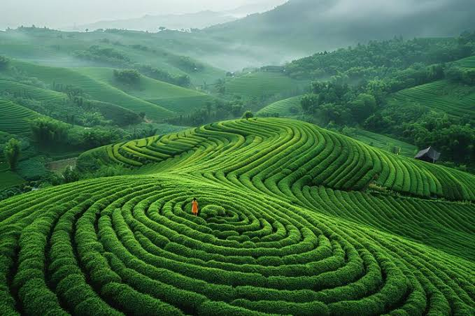
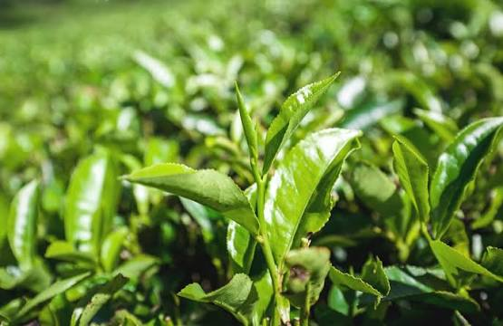
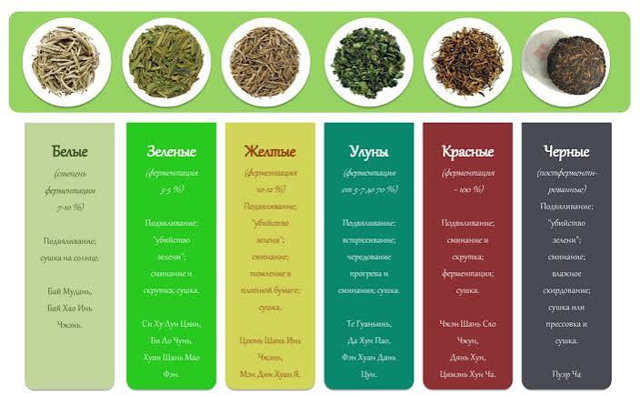

О чае
Все настоящие сорта чая — зелёный, белый, улун, чёрный и пуэр — получают из листьев камелии китайской. Различия во вкусе зависят от региона и степени окисления листа.
Подробнее»





Знаменитый зелёный чай из окрестностей озера Сиху близ Ханчжоу. Листья вручную обжаривают на сковороде, из-за чего они становятся плоскими, а вкус — ореховым и чуть сладковатым.
Подробнее»Чай из провинции Юньнань, который прессуют в блины, кирпичи и «гнёзда». Различают шэн (сырой) и шу (ферментированный) пуэр — второй получается тёмным и мягким.
Подробнее»
Все настоящие сорта чая — зелёный, белый, улун, чёрный и пуэр — получают из листьев камелии китайской. Различия во вкусе зависят от региона и степени окисления листа.
Подробнее»По китайской легенде, чай открыл император Шэнь-нун: в кипящую воду случайно упали листья дикого чайного дерева, и напиток ему понравился. Историки считают, что чай пили в Китае более двух тысяч лет назад, а в Европу он попал в начале XVII века благодаря торговле с Востоком.
Подробнее»
Зелёный, белый, жёлтый, улун, чёрный и пуэр — шесть видов чая, которые отличаются степенью окисления и способом обработки листа.
Подробнее»Японский зелёный чай в виде тонкого порошка. Матчу не заваривают, а взбивают бамбуковым венчиком с горячей водой; она занимает центральное место в чайной церемонии.
Подробнее»«Железная богиня милосердия» — один из самых известных улунов из провинции Фуцзянь. Листья скручивают в плотные шарики, которые раскрываются при заваривании.
Подробнее»